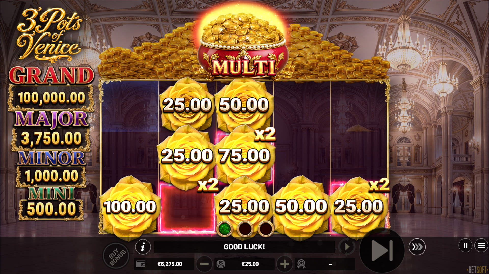
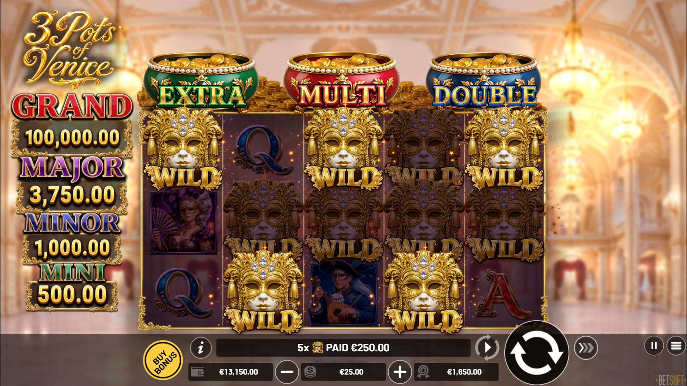
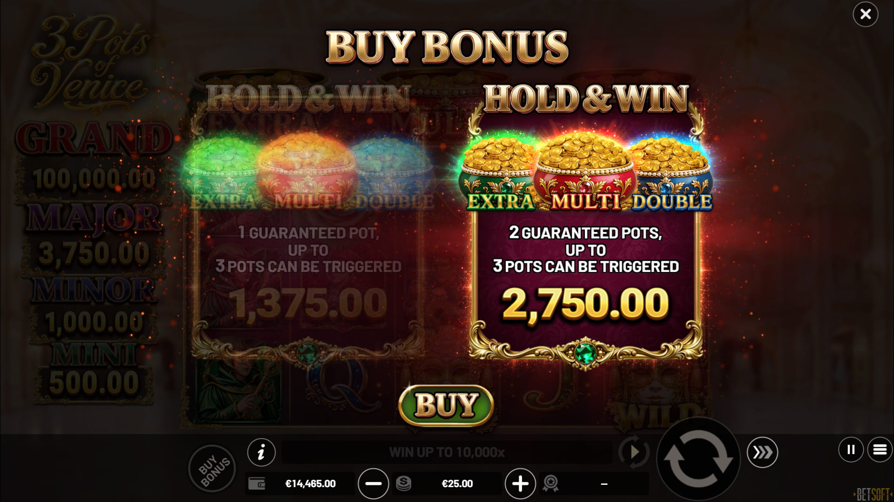

3 Pots of Venice (Betsoft): tres Coin Pots, Hold & Win y premio máximo de 10.000x
Publicado el 11 de octubre de 2026. Betsoft lanzó 3 Pots of Venice el 2 de octubre: una tragamonedas de carnaval de volatilidad muy alta en cuadrícula 5x3 con 25 líneas, donde tres Coin Pots sobre los carretes - Extra, Multi y Double - abren paso a un Hold & Win con premio máximo de 10.000x.

Arte oficial del juego: Betsoft.
Datos clave
| Proveedor | Betsoft |
|---|---|
| Fecha de lanzamiento | 2 de octubre de 2026 |
| Diseño | Cuadrícula 5x3, 25 líneas de pago, pagos de izquierda a derecha |
| RTP | 96,20% |
| Volatilidad | Muy alta |
| Frecuencia de aciertos | 18,40% |
| Premio máximo | 10.000x la apuesta |
| Mecánica principal | Tres Coin Pots (Extra, Multi, Double); Hold & Win con 3-4 respins; Buy Bonus con pozos garantizados |
Cómo se juega
El juego base es una tragamonedas clásica 5x3 con 25 líneas ambientada en el carnaval de Venecia, con un comodín en cada carrete que reemplaza todo menos los símbolos Coin Pot Bonus. El juego de verdad está sobre los carretes: tres Coin Pots llamados Extra, Multi y Double. Cada pozo junta sus propios símbolos Coin Pot Bonus, y llenar cualquiera puede abrir el Hold & Win - y más de un pozo puede activarse al mismo tiempo.

El Hold & Win, impulsado por los tres Coin Pots. Captura oficial: Betsoft.
Los pozos cambian las reglas del bono de formas distintas. Extra sube la cuenta de respins de 3 a 4. Multi reparte multiplicadores aleatorios de x2 a x10 por los carretes. Double duplica todo el tablero, y cada tablero junta premios por su cuenta. Como los pozos pueden activarse juntos, las rondas más fuertes salen de las combinaciones y no de un solo pozo.

Comodines en cada carrete del juego base. Captura oficial: Betsoft.
Donde la regulación lo permite se puede saltar la espera con el Buy Bonus, que abre el Hold & Win con uno o dos pozos activos garantizados. El premio mayor es de 10.000x la apuesta.

El Buy Bonus abre la función con uno o dos pozos garantizados. Captura oficial: Betsoft.
Dónde jugar
Los títulos de Betsoft están en los lobbies de Vave y N1 Casino - la disponibilidad cambia por región, así que revisa el lobby en tu país antes de depositar.